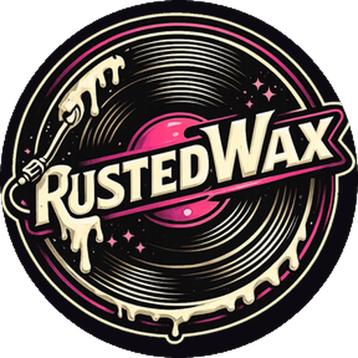
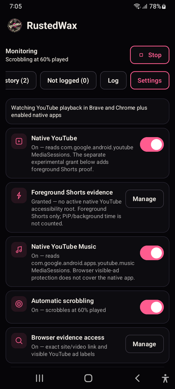
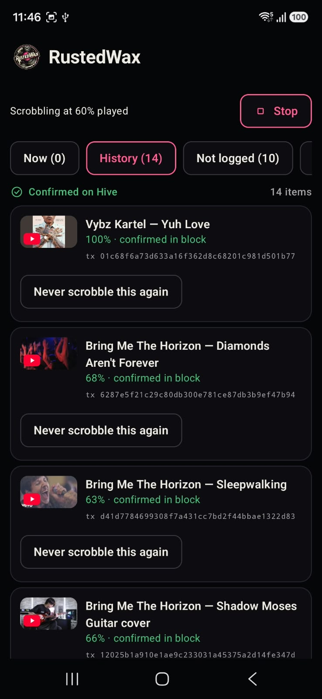

Works across YouTube
Supports the native YouTube and YouTube Music apps plus YouTube playback in Brave and Chrome.

Android scrobbling for Hive.
RustedWax watches what you actually play in YouTube, YouTube Music, Brave, and Chrome, then writes verified listens to the Hive blockchain.
A transparent listening history you control, backed by public Hive transactions.
Supports the native YouTube and YouTube Music apps plus YouTube playback in Brave and Chrome.
Playback is measured and the video is identified before anything is allowed onto the chain.
History includes Hive transaction IDs, while rejected tracks explain why they were not logged.
Your posting key is protected by Android Keystore; transactions are signed locally.


RustedWax is currently a prototype built from source; there is no public signed release yet.
Use only a Hive posting key—never an active or owner key. Read the complete setup guide.
Architecture, behavior rules, testing evidence, and project history live in the full documentation.